El universo según Einstein
Espacio y tiempo dejan de ser un escenario fijo y pasan a ser actores: se estiran, se contraen y vibran. De la relatividad especial de 1905 a la general de 1915, y de ahí a las comprobaciones que la han vuelto una de las teorías más exitosas de la física: la órbita de Mercurio, el eclipse de 1919, los lentes gravitacionales y las ondas gravitacionales detectadas exactamente 100 años después de su predicción.
Este módulo abandona los objetos "simples" —una estrella, una galaxia— y entra en lo exótico: agujeros negros, núcleos activos, cosmología. Para eso necesitamos primero el andamiaje teórico, y ese andamiaje es la teoría de la relatividad. La profesora la presenta en dos actos: la relatividad especial (1905), que nace de un solo hecho experimental —la velocidad de la luz es la misma para todos— y la relatividad general (1915), que reinterpreta la gravedad como geometría del espacio-tiempo. Para alguien de ingeniería, la moraleja es familiar: cuando los datos contradicen la intuición, se ajusta el modelo, no los datos.
1905, el año milagroso
Un empleado de patentes de 26 años publica cuatro artículos que cambian la física.
En 1905 —su annus mirabilis— Einstein publicó cuatro artículos, cada uno suficiente para una carrera entera:
- Marzo: el efecto fotoeléctrico (la luz como cuantos de energía), que le valió el Premio Nobel en 1921.
- Mayo: el movimiento browniano, evidencia decisiva de que los átomos existen.
- Septiembre: la relatividad especial, que conecta espacio y tiempo.
- Noviembre: la equivalencia masa–energía: .
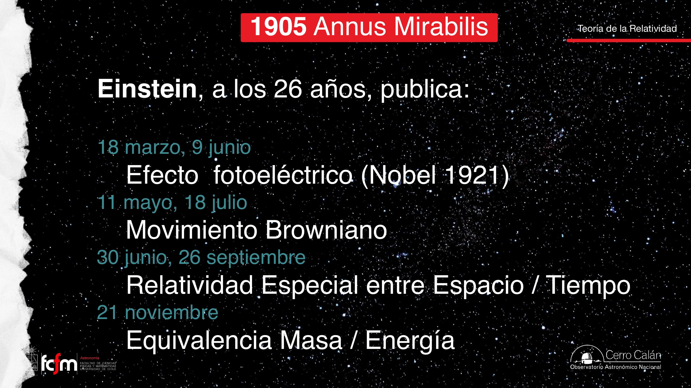
Diez años después, en 1915, llegó la relatividad general, la teoría que "cambió completamente el paradigma de nuestro entendimiento del universo". A diferencia de la mecánica cuántica —construida por muchas manos con pequeños aportes de laboratorio—, la relatividad se la debemos casi entera a una sola persona.
La velocidad siempre fue relativa
Antes de Einstein ya había cantidades relativas; lo suyo fue otra cosa.
Cuando se dice "para Einstein todo es relativo" se malinterpreta la teoría. Hay cantidades que siempre han sido relativas y no tienen nada de einsteinianas. La clase usa simulaciones sencillas:
- Una ardilla parada junto al camino ve pasar un auto hacia la derecha y un pájaro hacia la izquierda: percibe sus velocidades sin ambigüedad.
- Un perro camina sobre un tren en dirección contraria al movimiento del tren. Si sus rapideces coinciden, para la ardilla el perro no se mueve. Si el tren acelera, el perro retrocede; si el perro apura el paso, avanza. La velocidad medida depende del observador.
- En el metro: si dos trenes están detenidos lado a lado y uno parte suavemente, por un instante no sabes cuál se movió. Sin aceleración (sin "tirones") la ambigüedad es total.
Y a escala astronómica: creemos que "damos vueltas al Sol y se acabó", pero el Sol orbita el centro de la Vía Láctea, así que la Tierra en realidad describe una espiral; y la galaxia entera se mueve, aproximadamente hacia Andrómeda. El movimiento siempre se define respecto a algo.
Nada de lo anterior es "relatividad de Einstein": es la relatividad galileana de toda la vida. Lo revolucionario de 1905 es que una cantidad que nadie cuestionaba como absoluta —el ritmo al que avanza el tiempo— también resulta ser relativa.
Relatividad especial: la luz no negocia
Un postulado experimental y sus consecuencias: el tiempo se dilata, los largos se contraen.
El punto de partida es un hecho experimental: cada vez que se medía la velocidad de la luz, salía el mismo valor, sin importar el estado de movimiento de quien medía. Un ejemplo con sabor astronómico: como la Tierra orbita el Sol, se midió cuando la Tierra va en una dirección y seis meses después, cuando va en la contraria. Resultado: idéntico. Einstein tomó ese dato en serio: asumamos que c es constante para todos los observadores y veamos qué consecuencias tiene.
El reloj de luz
El experimento mental: dentro de un vagón, un pulso de luz va desde una pared, rebota en un espejo y vuelve. Para el pasajero, la luz recorre (ida y vuelta). Pero para alguien parado en la calle que ve pasar el vagón, la luz recorre una trayectoria diagonal, más larga. Y aquí está la trampa: la velocidad de la luz es la misma para ambos. Si la distancia es mayor y la velocidad es la misma, entonces el tiempo transcurrido tiene que ser mayor:
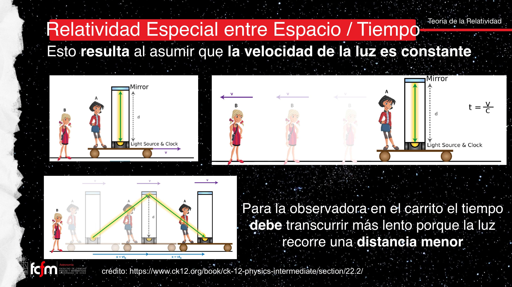
"¿Y para el que va arriba del tren?" — La situación es totalmente simétrica: para el pasajero, quien se mueve es la persona de la calle, y es el reloj de ella el que se dilata. Por eso la palabra relativo: no hay un observador privilegiado. En tiempos de Einstein no había tecnología para medirlo; hoy la relatividad especial está completamente comprobada.
La constancia de c funciona como una invariante del sistema: si un requisito no negociable entra en conflicto con supuestos implícitos (tiempo absoluto), lo que se refactoriza son los supuestos. Y la simetría entre observadores recuerda a los relojes en sistemas distribuidos: no existe un "reloj global" privilegiado; cada nodo tiene su línea de tiempo y las comparaciones requieren protocolo.
El principio de equivalencia
1915: gravedad y aceleración no se parecen — son lo mismo.
El salto a la relatividad general parte de una afirmación que Einstein formuló en 1907: hay una completa equivalencia física entre estar en un campo gravitacional y estar en un sistema acelerado con . No es que "se sientan parecido": son la misma cosa.
- Encerrado en una caja sobre la Tierra, sientes que el piso te empuja. Encerrado en la misma caja en el espacio, acelerada "hacia arriba" con , sientes exactamente lo mismo. No hay experimento físico que distinga ambas situaciones.
- El recíproco: caer libremente en un campo gravitacional es indistinguible de flotar en el espacio sin gravedad.
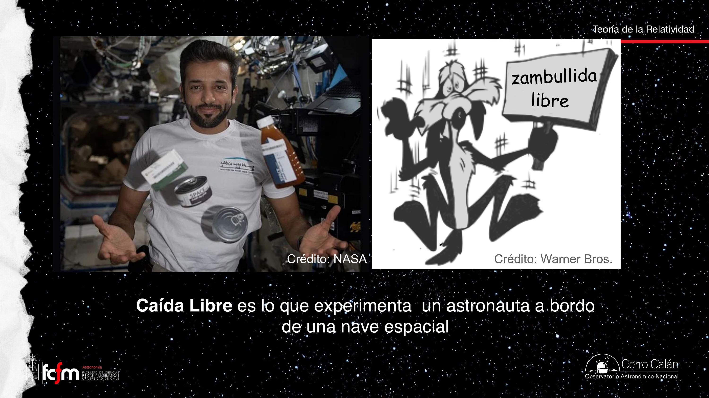
Alguien preguntó por el "principio de inercia". No es esto: la inercia (primera ley de Newton, formulada originalmente por Galileo) describe qué hace un cuerpo cuando no hay fuerzas: mantiene su estado de movimiento. El principio de equivalencia habla de otra cosa: de la identidad entre gravedad y la aceleración que la gravedad induce. Consejo de la profesora: la palabra "inercia" está tan mal usada que conviene quedarse con .
Relatividad general: gravedad = geometría
La materia y la energía deforman el espacio-tiempo; esa deformación es lo que llamamos gravedad.
Puesto en ecuaciones (con ayuda matemática de otros, pero con la idea enteramente suya), el principio de equivalencia lleva a la conclusión de 1915: la gravedad no es una fuerza, es la deformación del espacio y del tiempo causada por la presencia de materia y/o energía (recordando que por ambas son intercambiables). Los cuerpos "intentan" viajar en línea recta, pero deben seguir la curvatura del espacio-tiempo — y eso se manifiesta como aceleración.
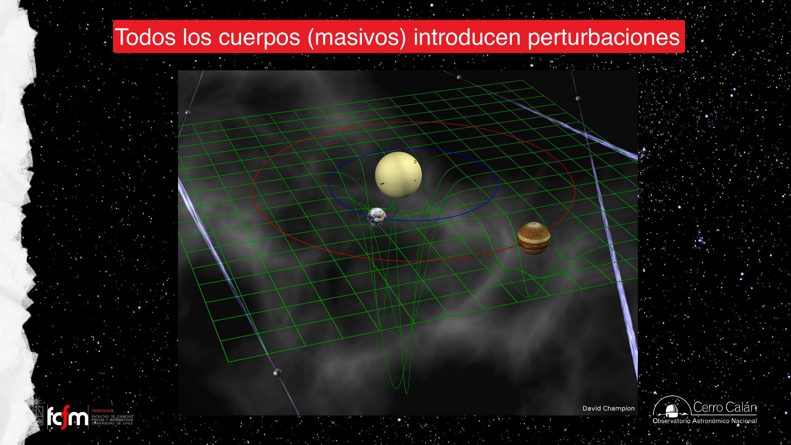
Qué le pasa al espacio, al tiempo y a la luz
- El espacio se contrae cerca de un cuerpo masivo y se dilata lejos de él.
- El tiempo hace lo opuesto: avanza más lento cerca de un cuerpo masivo y más rápido lejos de él.
- La luz que escapa de un cuerpo masivo pierde energía: se corre al rojo. Es el redshift gravitacional — distinto del Doppler y distinto del redshift cosmológico.
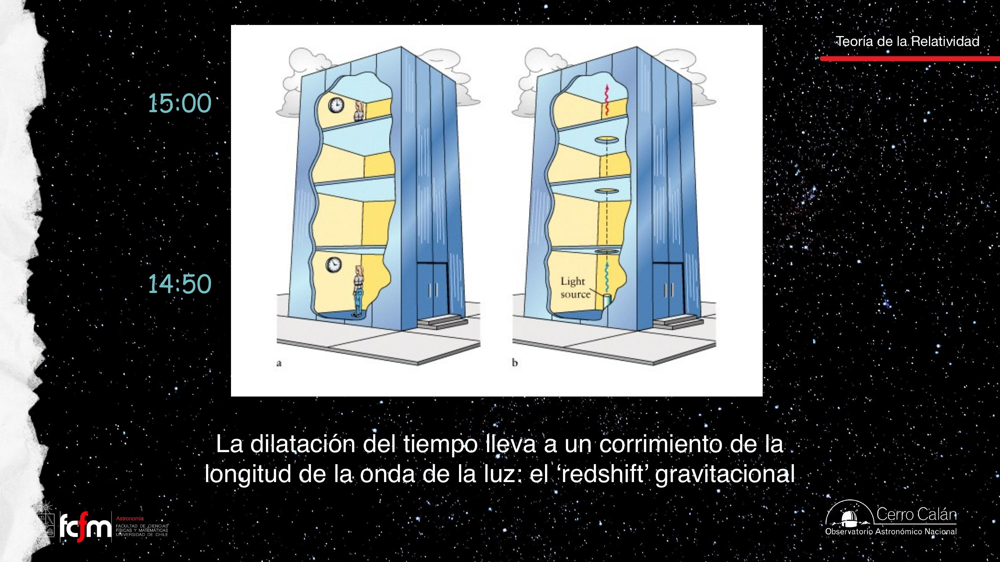
En la película, los protagonistas pasan unas horas en un planeta que orbita muy cerca de un agujero negro; al volver a la nave nodriza, el compañero que esperó lejos envejeció décadas. La regla mnemotécnica de la clase: cerca del campo gravitacional intenso, el tiempo va más lento. Es el mismo efecto del reloj del subsuelo vs. el del piso alto, llevado al extremo.
Los satélites de navegación orbitan a ~20.000 km de altura, donde el tiempo corre distinto que en el suelo (según la lámina, los relojes se adelantan del orden de decenas de milisegundos por día; el valor estándar en la literatura es ≈ 38 microsegundos/día netos — ver nota al pie). Como el sistema requiere precisión de nanosegundos, sin correcciones relativistas el GPS acumularía kilómetros de error: "terminaríamos todos en Argentina tomando vino Malbec".
El redshift gravitacional y la dilatación temporal son un problema de sincronización de relojes con deriva sistemática conocida: como servidores NTP donde un nodo corre consistentemente más rápido. La solución del GPS es la misma de ingeniería: modelar la deriva y compensarla en el protocolo.
Las comprobaciones clásicas
Mercurio ya lo insinuaba; el eclipse de 1919 lo confirmó ante el mundo.
La precesión de Mercurio
La órbita de Mercurio es levemente elíptica y su elipse rota lentamente (precesa). La mecánica newtoniana no explicaba del todo esa precesión; al estar Mercurio tan cerca del Sol, hacen falta correcciones relativistas, y con ellas el número calza. Fue la primera evidencia a favor de la teoría.
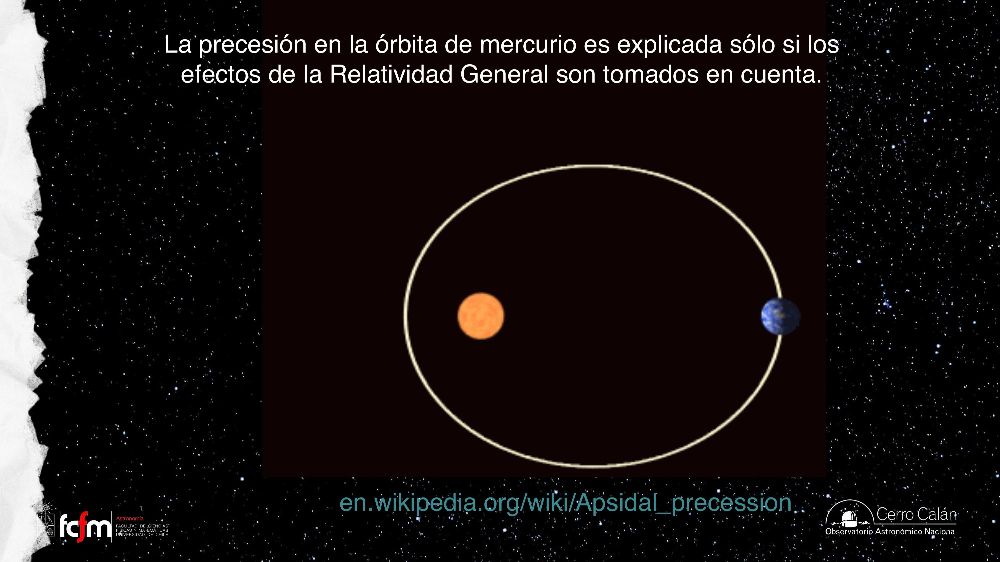
El eclipse de 1919
Si la masa curva el espacio, la luz también debe desviarse al pasar cerca del Sol: las estrellas cuya luz roza el disco solar deberían verse corridas hacia afuera, "como una flor que se abre". El problema: con el Sol en el cielo es de día y no se ven estrellas. La solución: apagar el Sol un ratito — un eclipse total.
En 1919, cuatro años después de publicada la teoría, los ingleses enviaron dos expediciones: una a Sobral (costa norte de Brasil) y otra a una isla frente a la costa occidental de África (Príncipe — la transcripción dice "costa este", ver nota al pie). En Príncipe iba Sir Arthur Eddington; a Brasil viajó el "grupo astrónomo" liderado por Andrew Crommelin… y fue la placa fotográfica de la expedición menos famosa la que permitió validar la relatividad general: las estrellas aparecieron desplazadas exactamente como predecía Einstein, con un corrimiento mayor cuanto más cerca del Sol.
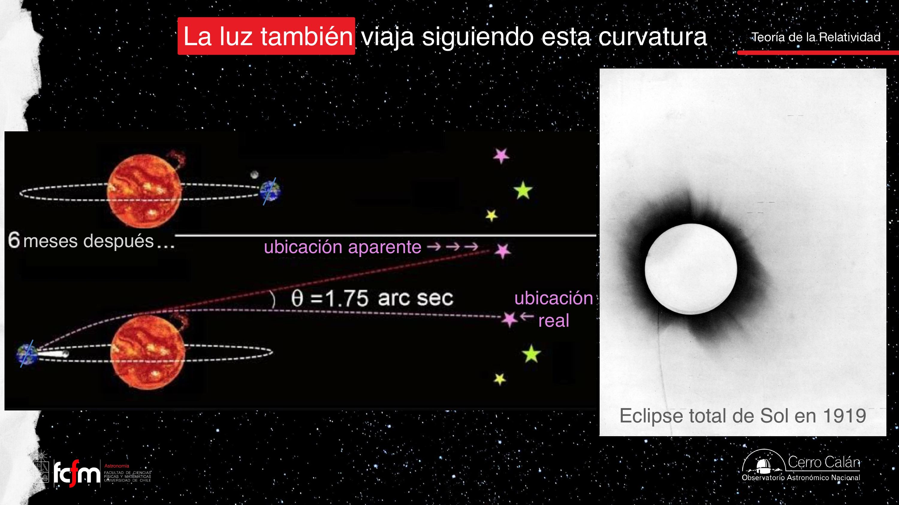

Lentes gravitacionales
El mismo efecto del eclipse, multiplicado por la masa de cientos de galaxias.
Los cúmulos de galaxias son las estructuras más masivas del universo actual: congregaciones de cientos de galaxias en regiones no mucho mayores que nuestro Grupo Local. Esa concentración de masa distorsiona tanto el espacio que actúa como un lente: luz de galaxias lejanas que "no debía" llegar a nosotros se curva y nos alcanza, formando arcos, anillos y cruces de Einstein según la geometría exacta del sistema.
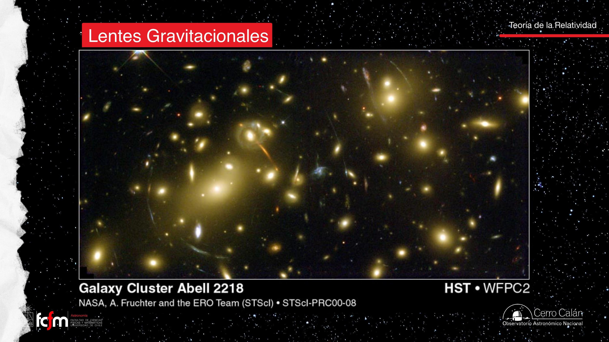
Hace unos 10 años explotó una supernova en una galaxia con imágenes múltiples (la clase se refiere al caso conocido como SN Refsdal). Como el modelo del lente indicaba qué camino recorre la luz de cada imagen, se pudo predecir que la explosión "reaparecería" meses después en los otros arcos — y así ocurrió, una tras otra, con la precisión calculada. Predecir el retardo exige entender perfectamente la distorsión del espacio.
La masa que produce el efecto lente en un cúmulo es principalmente materia oscura, no la materia luminosa de las galaxias. Por eso modelar un lente no es trivial: el mapa de masa no coincide con el mapa de luz.
Ondas gravitacionales
Cuando la masa se acelera, el espacio-tiempo mismo ondula.
Todo lo anterior asume masas quietas. Pero el universo no es pacífico: hay fusiones de galaxias, explosiones, colisiones de objetos compactos. Cuando una masa se acelera, la deformación del espacio-tiempo se propaga como una onda: una onda gravitacional, predicha por Einstein (que pensó que jamás serían medibles) y detectada por primera vez en 2015, exactamente 100 años después de su artículo.
- Al pasar la onda, el espacio se contrae en una dirección y se estira en la perpendicular, alternadamente; el tiempo también oscila.
- Viajan a la velocidad de la luz, como las ondas electromagnéticas.
- La analogía de la clase: cargas aceleradas → luz; masas aceleradas → ondas gravitacionales. Pero la gravedad es tan débil comparada con el electromagnetismo que el efecto es minúsculo: los cambios de longitud medidos son del orden del tamaño de un átomo en un brazo de 4 km.
- Se atenúan con la distancia como cualquier fenómeno ondulatorio: la misma energía se reparte en frentes cada vez mayores (como los corchos que suben y bajan cada vez menos lejos de la piedra que cayó al lago).
- No son ondas mecánicas (como el sonido, que necesita un fluido): son oscilaciones del espacio-tiempo mismo, asociadas a una fuerza fundamental.

Lo único detectable hoy son los eventos dinámicamente más extremos: fusiones de agujeros negros y de estrellas de neutrones, cuerpos ultracompactos que en los instantes previos a fusionarse viajan a velocidades cercanas a la de la luz.
De Hulse–Taylor a LIGO
Primero una inferencia elegante (1974), luego la detección directa (2015).
El púlsar binario de Hulse y Taylor
En 1974, Hulse y Taylor estudiaron el sistema B1913+16: dos estrellas de neutrones orbitándose muy de cerca (período ~8 horas), y al menos una de ellas púlsar — es decir, un reloj natural más preciso que los relojes atómicos. Si el sistema emite ondas gravitacionales, pierde energía y las órbitas deben encogerse a un ritmo calculable. Midieron los parámetros orbitales durante años: el decaimiento observado calza sobre la predicción teórica punto por punto. Premio Nobel de Física 1993. Este mismo mecanismo —radiar energía, acercarse, girar más rápido, radiar más— es el que finalmente lleva a estos sistemas a la fusión.
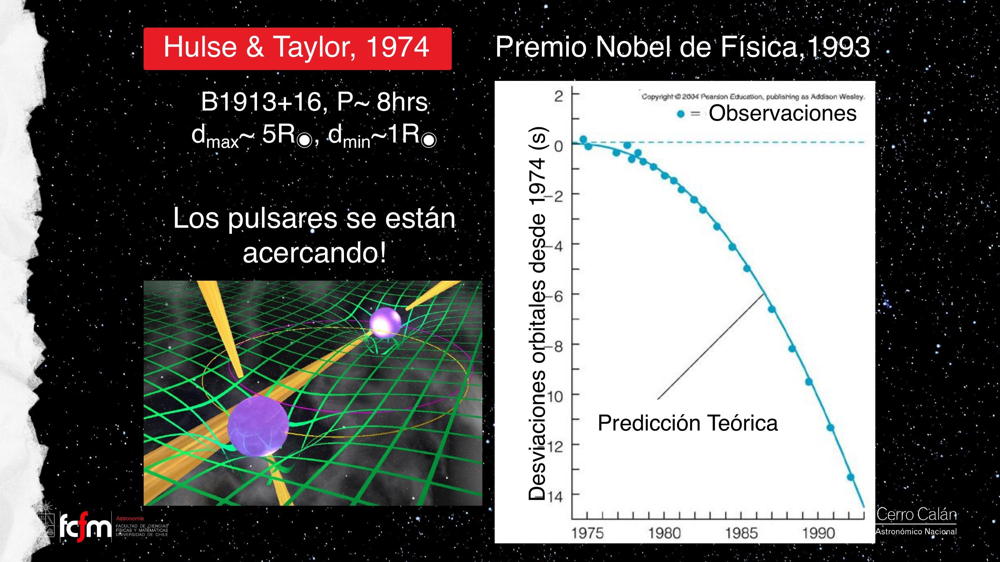
LIGO: interferometría láser
LIGO (Laser Interferometer Gravitational-wave Observatory) tiene dos brazos perpendiculares de 4 km. Un láser se divide, recorre ambos brazos, rebota y se recombina. Si los brazos miden exactamente lo mismo, las ondas vuelven en fase; si una onda gravitacional cambia el largo de un brazo (¡en una fracción del tamaño de un átomo!), la luz vuelve fuera de fase y aparece una señal de interferencia. Para descartar perturbaciones locales (camiones, sismos, pájaros) hay dos observatorios gemelos en extremos opuestos de EE. UU. (estados de Washington y Luisiana): una señal real debe verse en ambos, con el retardo correcto.
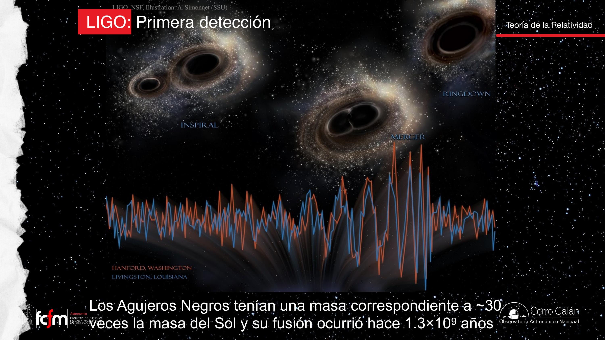
Lo que las ondas nos enseñaron
De la pura señal se extraen la distancia del sistema, las masas de los progenitores y la masa final. Con LIGO, Virgo (Italia) y KAGRA (Japón) se ha acumulado un catálogo de fusiones que reveló una población de agujeros negros estelares más masivos (decenas de masas solares, hasta ~100) que los conocidos por métodos electromagnéticos — con el sesgo esperable: los sistemas más masivos producen ondas de mayor amplitud y se detectan preferentemente. Es la lección de siempre: una nueva forma de medir revela objetos que la forma antigua no veía.
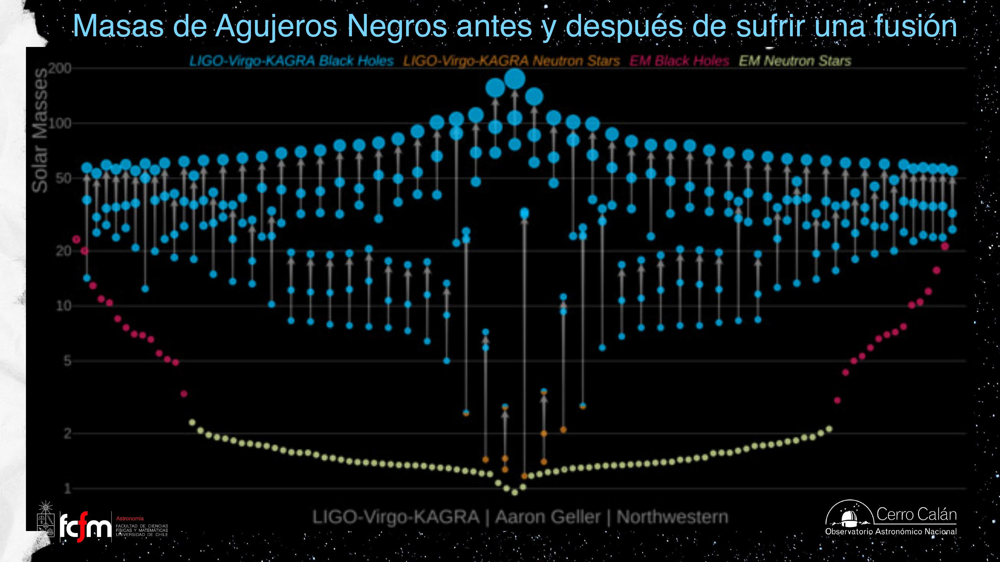
La fusión de dos estrellas de neutrones se llama kilonova. En la primera detectada (2017), la triangulación entre LIGO y Virgo indicó la dirección; esa noche los telescopios del mundo apuntaron allí y vieron el objeto brillar y apagarse. Fue el inicio de la astronomía "multimensajera": ondas gravitacionales + luz del mismo evento.
Todos los púlsares son estrellas de neutrones, pero no toda estrella de neutrones es púlsar. Recién formada, la estrella de neutrones tiene campos magnéticos intensísimos que aceleran partículas y producen pulsos de radiación (efecto faro). Esa actividad gasta energía: el campo decae y, con el tiempo, la estrella deja de pulsar.
Explorar conceptos
Dos calculadoras para desarrollar intuición sobre las dos dilataciones del tiempo.
Conceptos clave
Tabla de repaso rápido.
| Concepto | Idea esencial |
|---|---|
| Annus mirabilis (1905) | Cuatro artículos de Einstein: efecto fotoeléctrico, movimiento browniano, relatividad especial y E = mc². |
| Postulado de c | La velocidad de la luz es la misma para todos los observadores; es un hecho experimental, no una hipótesis cómoda. |
| Dilatación del tiempo | Un reloj en movimiento avanza más lento visto desde el reposo (factor γ). El efecto es simétrico entre observadores. |
| Contracción de largos | Las longitudes en la dirección del movimiento se acortan en el mismo factor γ. |
| Principio de equivalencia | Gravedad y aceleración son físicamente indistinguibles; caída libre equivale a flotar sin gravedad. |
| Relatividad general (1915) | La materia-energía deforma el espacio-tiempo; los cuerpos y la luz siguen esa curvatura. Eso es la gravedad. |
| Redshift gravitacional | La luz que escapa de un cuerpo masivo se enrojece; el tiempo corre más lento cerca de la masa (GPS, Interestelar). |
| Precesión de Mercurio | La rotación de la elipse orbital solo se explica con correcciones relativistas. |
| Eclipse de 1919 | Eddington y Crommelin midieron la deflexión de la luz estelar junto al Sol: primera confirmación de la RG. |
| Lente gravitacional | Cúmulos de galaxias curvan la luz de objetos lejanos: arcos, anillos, imágenes múltiples; domina la materia oscura. |
| Onda gravitacional | Oscilación del espacio-tiempo emitida por masas aceleradas; viaja a c; amplitud detectada ~ tamaño de un átomo. |
| Hulse–Taylor (1974) | Decaimiento orbital de un púlsar binario = pérdida de energía por ondas gravitacionales (Nobel 1993). |
| LIGO / Virgo / KAGRA | Interferómetros láser de km; primera detección directa en 2015 (GW150914, ~30+30 M☉). |
| Kilonova | Fusión de dos estrellas de neutrones; la de 2017 inauguró la astronomía multimensajera. |
Exámenes de práctica
10 exámenes de 5 preguntas: 3 de alternativas autocorregibles + 2 de respuesta escrita con solución propuesta.
- Examen 011905 y la relatividad de la velocidad
- Examen 02El reloj de luz
- Examen 03Principio de equivalencia
- Examen 04Espacio-tiempo curvo
- Examen 05Redshift gravitacional y GPS
- Examen 06Mercurio y el eclipse de 1919
- Examen 07Lentes gravitacionales
- Examen 08Ondas gravitacionales
- Examen 09Hulse–Taylor y LIGO
- Examen 10Integrador